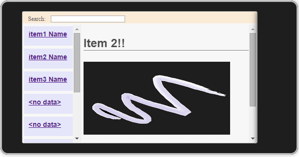

AngularJS Master-Detail Page for Apache Cordova
Introduction
The AngularJS Master-Detail Sample shows you how to create a cross-platform, multi-page app using Visual Studio Tools for Apache Cordova (CTP3) in Visual Studio 2013 Update 4. The extension enables the creation of cross-platform apps using Apache Cordova that can run on Android, iOS, and Windows.
Description
The sample creates a master-detail list using AngularJS in a Multi-Device Hybrid App. This sample demonstrates the following:
- AngularJS routing for multi-page apps using the routing module (ngRoute) and partial pages.
- MVC design using the AngularJS controller (ngController) and AngularJS templates.
- Data binding (ngModel).
- Simple search function using the AngularJS filter.
- JSON data files that provide the data model.
- Page animations using CSS3 @keyframes rules.
This sample demonstrates flexible UI design techniques for building cross-platform UI. (For a sample that uses Ionic for cross-platform UI, MVC, and AngularJS routing, see Ionic SideMenu Template for Cordova.) Flexible design techniques present in the Master-Detail sample include:
- Use of CSS3 FlexBox
- Use of @media queries to handle different display sizes and orientations
The app creates a two-column master-detail view. The master-list appears in the left column. When you select a link, the AngularJS routing module loads a partial page (a separate HTML file) into the right column. The master list and the details page are populated with data from JSON files using declarative binding in an AngularJS template (in index.html).
Although AngularJS also includes an animation module, I created page animations directly using CSS3 @keyframes. (In many cases, I find that working directly with CSS3 is quicker and more flexible than using more indirect methods.)
The sample uses only Web technologies and does not use any native API access via plugins. The sample has been tested on:
- Android (Visuall Studio Emulator for Android, available in Visual Studio 2015 Preview)
- iOS (Ripple and iOS Simulator)
- Windows 8.1
- Windows Phone 8.1
Updates
On 9/30/14, updated UI.
- Reworked CSS to support dynamic switching between horizontal scrolling master-list at the top (portrait mode) and a vertical scrolling master-list on the left (landscape mode).
- Made UI more flexible for use as an x-plat template (more use of CSS3 FlexBox, less hardcoded values).
Note: On Android <4.4, vh and vw units are not supported, so min-height and min-width properties are set. For iOS, vh and vw units are partially supported, and a special JS handler is implemented. For more info, see http://caniuse.com/#feat=viewport-units - Streamlined CSS styles and @media queries, and eliminated platform overrides in CSS (made it more generic).
On 11/17/14, uploaded a new version built with Visual Studio 2015 Preview (not compatible with VS 2015 RC). It should be fully compatible with Visual Studio 2013 Update 4.
- Note: due to a Cordova issue with the temporary key, described in this page, the /res/native/windows folder contains CordovaApp_TemporayKey.pfx. Cordova will be releasing a fix to this issue. If you are using VS 2013 Update 4, move this file to /res/cert/windows8.
On 11/18/14, UX work; replaced standard links with buttons. Buttons now load the partial pages into the view using the routing module.
Customizing the sample for other multi-page apps
The <div ng-view></div> element in index.html specifies where partial pages get loaded in the DOM tree. If you want to create an app that loads partial pages as full-screen pages (without nesting inside other DOM elements, as in this sample), re-write the markup in index.html like this:
<body ng-app="angularApp">
<div ng-view></div>
<!-- script refs -->
</body>
You will also need to modify app.js and controllers.js, respectively, to support any new application routes and controllers.
Requirements
- Visual Studio 2013 Update 4 (Professional, Ultimate, or Premium)
- The Visual Studio Tools for Apache Cordova extension for Visual Studio (a separate download in VS 2013 Update 4).
- Specific platforms have other requirements. For more info, see Install the Multi-Device Hybrid Apps Extension (http://msdn.microsoft.com/library/dn757054.aspx).
Note: The sample for use with Visual Studio 2015 RC or later is on github: https://code.msdn.microsoft.com/windowsapps/AngularJS-Detail-Sample-7a409e5e/https://github.com/Mikejo5001/angularjs-navigation-master-detail
Build and Run the app
- After downloading the .zip, rename the .zip to remove spaces in the filename, and then move the .zip to a folder that does not contain spaces (this resolves a Cordova issue with spaces in the path name for Windows build targets).
- Extract the .zip file.
- In Visual Studio, open the solution file (.sln) for the project.
- If you are targeting Windows and are using VS 2013 Update 4, move the CordovaApp_TemporaryKey.pfx file to /res/cert/windows8. (For more info, see Updates section for 11/17/14).
- Press F5 to build and deploy the app.
The first time you build the app in VS, a PowerShell script referenced in the .jsproj file will download the required AngularJS framework files.
Note: If the framework files (in /scripts/frameworks/) do not download, you will need to unblock the PowerShell script from running. For more info, see this post (http://stackoverflow.com/questions/24410962/winjs-sample-code-js-file-missing). - Fore more info on using the extension, see Getting Started with Multi-Device Hybrid Apps (http://msdn.microsoft.com/library/dn771545.aspx).
The following screenshot shows the sample app running in the Ripple Emulator (Nexus [Galaxy]), in landscape orientation.

The next screenshot shows the sample app running in portrait mode (Nexus [Galaxy]).